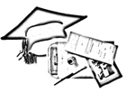

|
Cochin University of Science and Technology (CUSAT) was founded in the year 1971 as a realisation of the long nourished dream of a unitary technical university. It aims to promote excellence in graduate, postgraduate studies and advanced research in a diverse spectrum of education that covers applied sciences, engineering, law, linguistics, industry, commerce and social sciences. An erudite faculty of around two hundred and fifty teachers and a student strength of less than a thousand five hundred from all parts of the country make for a unique staff-to-student ratio. CUSAT boasts of eighty programmes of study in eight faculties. Of the seven thousand students who have passed out, six hundred have earned doctorates in the various disciplines. Twenty two departments, eight schools, nine centres, seventeen recognised research institutions and seven auxiliary units contribute to its curricular and co-curricular activities. By 1995, funded research schemes worth ninety million rupees were completed and projects valued at roughly four million rupees are in progress, an achievement paralleled only by a select few universities in the country. Cochin University of Science and Technology is the only university in India to be chosen by the Government of Netherlands as a counterpart institution, wherein it would grant infrastructural and financial assistance (worth 3.5 million Dutch Guilders per year) over a period of twelve to fifteen years under the M.H.O. programme. The University has stuck to the commitment of providing quality manpower every year, while meeting the complex demands of the fast evolving world. In keeping up with this trend, the university offers Post Graduate and Doctoral courses in specialised streams like Naval Architecture, Image Processing, Management, Artificial Intelligence and Intellectual Property Law.
|
 |
||
| |||